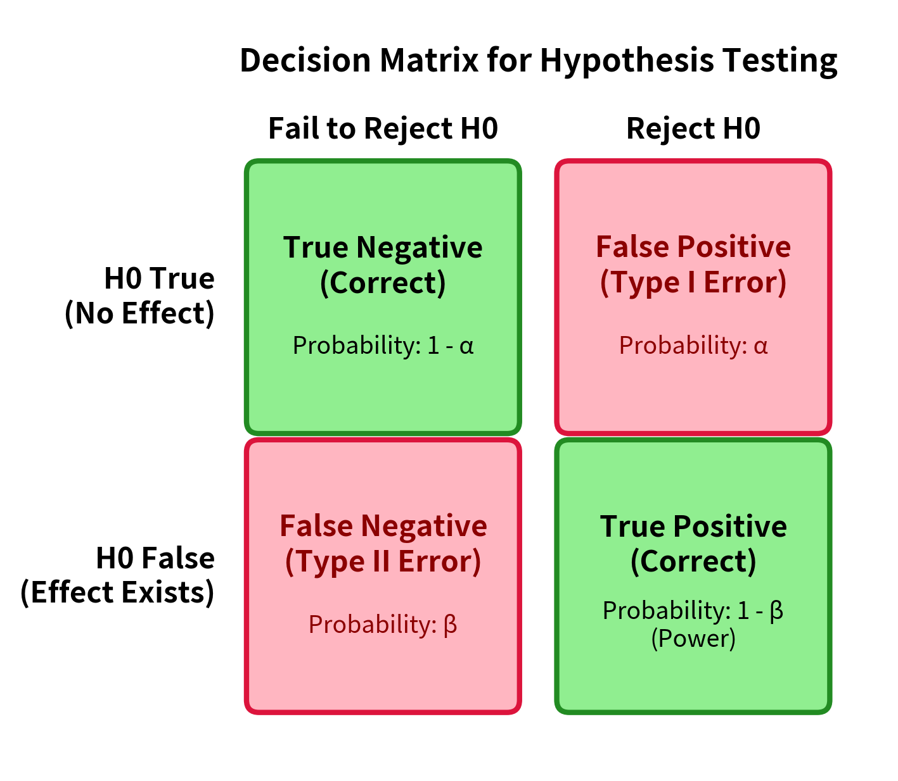
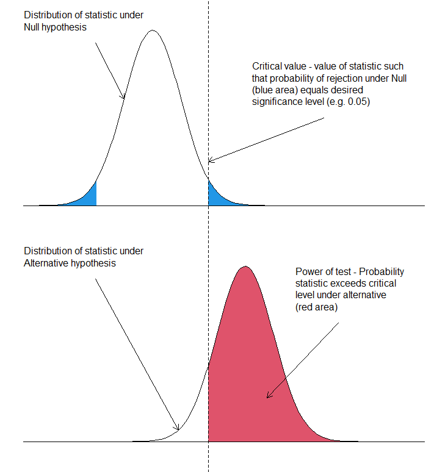

Hypothesis Testing¶
Introduction¶
A hypothesis is a statement about a population parameter.
Definition 1.1: Complementary Hypotheses
The two complementary hypotheses in hypothesis testing are called the null hypothesis and the alternative hypothesis written as \(H_0\), \(H_1\). The alternative can also be written as \(H_A\).
If \(\theta\) is a population parameter, then \(H_0 = \{\theta \in \Theta_0\}\) and \(H_1 = \{\theta \in \Theta_0^C\}\).
Example 1.1: Drugs
If \(\theta\) denotes the average change in a patient's blood pressure after taking a drug, an experimenter would likely by interested in testing \(H_0: \theta = 0\) vs \(H_1: \theta \neq 0\).
The null states that on average, the drug doesn't affect blood pressure whereas the alternative states that there is some effect. The common situation is that \(H_0\) states that the treatment has no effect, hence why it is called the "null" hypothesis.
The alternative \(H_1\) (or \(H_A\)) can be one-sided (specifying that the treatment effect is positive) or two-sided (specifying that the treatment effect exists whether positive or negative).
Definition 1.2: Hypothesis Test
A hypothesis test is a rule that specifies for which sample values the decision is made to accept \(H_0\) as true vs where \(H_0\) is rejected and \(H_1\) is accepted as true.
We can sidestep the philosophical discussion of accepting \(H_1\) as opposed to "rejecting the null".
Typically, a test statistic \(W(X_1, \dots, X_n) = W(\mathbf{X})\) is a function of the sample. A test might specify that \(H_0\) is to be rejected if \(W(\mathbf{X}) = \bar{X}\), the sample mean, is greater than \(10\). Here, test statistic is the sample mean and the rejection region is \(\{(x_1, \dots, x_n): \bar{x} > 10\}\).
Methods of Finding Tests¶
Likelihood Ratio¶
Recall that if \(X_1, \dots, X_n\) is a random sample from a population with distribution \(f(x \mid \theta)\), the likelihood function is:
Definition 2.1.1: Likelihood Ratio Test Statistic
Let \(\Theta\) denote the parameter space. Then, the likelihood ratio test statistic for testing \(H_0: \theta \in \Theta_0\) versus \(H_1: \theta \in \Theta_0^C\) is
A likelihood ratio test is any test with a rejection region of the form \(\{\mathbf{x} : \lambda(\mathbf{x}) \leq c\}\) where \(0 \leq c \leq 1\).
In the discrete case, the numerator is the maximum probability of the observed sample under the null hypothesis while the denominator is the maximum probability of the observed sample over all possible parameters.
This ratio is small when there are points in the alternative hypothesis space where the observed sample is much more likely. When this ratio is close to \(1\), the null hypothesis space produces as good (or nearly as good) likelihoods for the observed sample.
This is essentially computing the ratio of maximum likelihoods.
Bayesian Tests¶
We use the posterior distribution \(\pi(\theta \mid \mathbf{x})\) to calculate the probabilities that \(H_0, H_1\) are true. Recall \(\pi(\theta \mid \mathbf{x})\) is a probability distribution over a random variable. The posterior probabilities, \(P(\theta \in \Theta_0 \mid \mathbf{x}), P(\theta \in \Theta_0^C \mid \mathbf{x})\) can be computed.
A Bayesian hypothesis tester can choose to accept \(H_0\) as true if \(P(\theta \in \Theta_0 \mid \mathbf{X}) \geq P(\theta \in \Theta_0^C \mid \mathbf{X})\). If the tester wishes to guard against false rejections, the tester can reject \(H_0\) only if \(P(\theta \in \Theta_0^C \mid \mathbf{X})\) is greater than some large number.
Evaluating Tests¶
Power, Errors¶
Definition 3.1.1: Errors
Recall that accepting \(H_1\) typically connotes accepting that a treatment had some "positive" effect, not necessarily in the normative sense but in the sense that it did something. A false positive (Type I Error) corresponds to rejecting \(H_0\) when \(H_0\) is true and a false negative (Type II Error) corresponds to "accepting" \(H_0\) when \(H_1\) is true.

Suppose \(R\) represents the rejection region of a test (rejection of the null). For \(\theta \in \Theta_0\), the probability of a false positive (Type I Error) is \(P_{\theta}(\mathbf{X} \in R)\). For \(\theta \in \Theta_0^C\), the probability of a false negative (Type II Error) is \(P_{\theta}(\mathbf{X} \in R^C) = 1 - P_{\theta}(\mathbf{X} \in R)\).
This leads to the following definition (and procedure):
Definition 3.1.2: Power Function
The power function of a hypothesis test with a rejection region \(R\) is a function of \(\theta\), \(\beta(\theta) = P_{\theta}(\mathbf{X} \in R)\).
With a finite sample, it is difficult to choose a test which minimizes the probability of both Type I and Type II Errors. Accordingly, we typically try to restrict the probability of a false positive to a size or level frequently called \(\alpha\).
Definition 3.1.3: Level
For \(0 \leq \alpha \leq 1\), a test with power function \(\beta(\theta)\) is a level \(\alpha\) test if \(\sup_{\theta \in \Theta_0} \beta(\theta) \leq \alpha\).
The level \(\alpha\) is essentially the tolerance that we have for a Type 1 Error (false positive). Recall that the power function is the probability of rejecting the null. Then, the level of a test is the probability of falsely rejecting the null (a false positive).
(There is a slight difference between level and size which I am currently ignoring).
The accepted false positive tolerance rate defines the rejection region, bounded by various critical values \(c\). Then, the statistical power of a test is the probability that the test statistic exceeds \(c\) when \(\theta \in \Theta_0^C\).

So in short:
-
We devise some statistic \(t(\mathbf{x})\) to test between two hypotheses \(H_0, H_A\).
-
We specify a significance level \(\alpha\) - our tolerance for false positives (incorrectly rejecting the null).
-
\(\alpha\) constrains a rejection region bounded by \(c\). \(c\) "shaves off" the tail(s) of the sampling distribution of \(t(\mathbf{x})\) under \(H_0\).
-
The statistical power of our test (against a specific \(\theta\)) is then (w.l.o.g.) the probability \(P_{\theta}(t(\mathbf{x}) > c | \theta \in \Theta_0^C)\) - the probability of correctly accepting the alternative (with being at most \(\alpha\) likely to falsely reject the null).
In the \(4\)th step, power is a function defined over the parameter space - so we frequently observe power curves as opposed to a single number.
Most Powerful Tests¶
Level \(\alpha\) tests have Type I error probabilities at \(\alpha\) for all \(\theta \in \Theta_0\). A good test then would also have a small Type II Error probability (a large power function for \(\theta \in \Theta_0^C\)). If one test had a smaller Type II Error than all other tets in that \(\alpha\)-class, it could be the best test in class.
Definition 3.2.1: UMP
Let \(\mathcal{C}\) be a class of tests for testing \(H_0: \theta \in \Theta_0\) vs \(H_A: \theta \in \Theta_0^C\). A test in class \(\mathcal{C}\) with power function \(\beta(\theta)\) is a uniformly most powerful (UMP) class \(C\) test if \(\beta(\theta) \geq \beta'(\theta)\) for every \(\theta \in \Theta_0^C\) and every \(\beta'(\theta)\) that is a power function of a test in class \(\mathcal{C}\).
Essentially, a maximal Type I error tolerance \(\alpha\) fixes a set of tests \(\mathcal{C}\). The test whose power function (probability of correctly rejecting the null) for every \(\theta \in \Theta_0^C\) is at least as large as every other power function in \(\mathcal{C}\) is called the UMP test in class \(\mathcal{C}\).
These requirements are quite strong so in practice, a UMP test may not exist. We would like to be able to identify UMP tests if they exist. The Neyman-Pearson Lemma describes which tests are UMP level \(\alpha\) tests where both the null and alternative hypotheses consists of one probability distribution (simple hypotheses).
Theorem 3.2.2: Neyman-Pearson Lemma
Consider testing \(H_0: \theta = \Theta_0\) vs \(H_1: \theta = \theta_1\) where the pdf correspoding to \(\theta_i\) is \(f(\mathbf{x} \mid \theta_i), i = 0, 1\) using a test with rejection region \(R\) that satisfies
for some \(k \geq 0\) and \(\alpha = P_{\theta_0}(\mathbf{X} \in R)\), then
-
Sufficiency. Any test that satisfies the three above conditions is a UMP level \(\alpha\)-test.
-
Necessity. If there exists a test satisfying the three above conditions with \(k > 0\), then every UMP level \(\alpha\) test is a size \(\alpha\) test and every UMP level $\alpha $ test satisfies the first two requirements except on a set \(A\) satisfying \(P_{\theta_0}(\mathbf{X} \in A) = P_{\theta_1}(\mathbf{X} \in A) = 0\).
\(p\)-values¶
After a hypothesis test is done, we want to report the conclusion in a statistically meaningful way. We could report \(\alpha\) and the decision. But if \(\alpha\) is large, the rejection decision is not as convincing as the test has a large probability of incorrectly rejecting the null. Instead, we can use a \(p\)-value.
Definition 3.3.1: p-value
A \(p\)-value \(p(\mathbf{X})\) is a test statistic satisfying \(0 \leq p(\mathbf{x}) \leq 1\) for each sample \(\mathbf{x}\). Small values of \(p(\mathbf{X})\) provide evidence for \(H_A\). A \(p\)-value is valid if for every \(\theta \in \Theta_0\) and every \(0 \leq \alpha \leq 1\),
The advantage of choosing a \(p\)-value rather than a specific \(\alpha\) is that the reader can choose the \(\alpha\) considered appropriate and compared the reported \(p\)-value to \(\alpha\).
Definition 3.3.2: Valid \(P\)-value
Let \(W(\mathbf{X})\) be a test statistic such that large values of \(W\) give evidence that \(H_1\) is true. For each sample \(\mathbf{x}\), define
Then \(p(\mathbf{X})\) is a valid p-value.
This is the probability of observing a result at least as extreme as the observed result given the null hypothesis. If the probability of observing such an extreme (or even more extreme) result is \(0.05\), then this observation is quite unlikely under the null hypothesis (hence we should reject it).